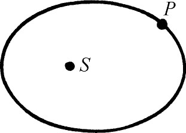
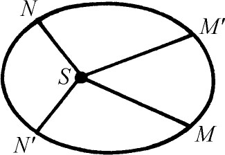

5．文艺复兴时期主要的科学进展
文艺复兴时期的数学家们翻译了希腊和阿拉伯的著作，并且在已有知识的基础上编辑了百科全书，为欧洲数学研究的高涨作了准备。但是欧洲后来的数学创作的启发和指导来自科学和技术问题，虽然也有些例外。代数的发展，至少在开头是阿拉伯活动路线的继续；在几何方面一些新的工作是根据艺术家们发生的问题而提出来的。
在文艺复兴时期，对推动以后两个世纪的数学具有决定意义的进展是哥白尼和开普勒领导的天文学革命。大约在1200年以后，当希腊人的工作被采用的时候，亚里士多德的天文理论（欧多克索斯的一个修补）和托勒玫的理论变得广泛流传并且互相对立。严格地说，对这两个体系，阿拉伯人和中世纪后叶的天文学家引进了各种各样的补充，以改进这两个体系的准确性，或者使亚里士多德的体系去适应基督教神学。托勒玫的体系在那个时代是相当准确的，它是纯数学的，所以只是作为一个假说，不作为真实构造的描述。亚里士多德的理论是为大多数人接受的，虽然托勒玫的理论对天文预测、航行和计算日历更为有用。
一些阿拉伯人，中世纪后叶的人，文艺复兴时代的人物，包括阿尔比鲁尼（973—1048）、奥雷姆和库萨（Cusa）的尼古拉（Nicholas，1401—1464）大主教，也许是响应希腊人的思想，当真考虑过地球或许在转动，并且考虑过在地球绕太阳转动的基础上，同样可能建立一种天文学理论，但是没有一个人提出新的理论。
在天文学家之中哥白尼作为一个巨人突然出现。哥白尼1473年生于波兰的托伦（Thorn），在克拉科夫（Cracow）大学学习数学和科学。23岁时他到波洛尼亚进一步深造，在那里他熟悉了毕达哥拉斯和另一些希腊人的学说，包括天文学。他还研究医学和教会法令。1512年他回到波兰成为弗劳恩堡（Frauenberg）大教堂的典事（一种管理人员），他在那里一直住到1543年逝世。他在完成工作职务的同时，专心致志于研究和观测，终于创立了革新的天文学理论。思维领域的这一成就，就其重要性、勇敢和宏伟的程度来说，远远超过了征服海洋的壮举。
很难断定什么原因使哥白尼抛弃了有1400年之久的托勒玫理论。在他的经典著作《天体运行论》（De Revolutionibus Orbium Coelestium，1543）的序言中所述的是不完全的并且有几分不可思议。哥白尼声明唤醒他的是关于托勒玫体系的精确度的各种不同观点，是认为托勒玫的理论只是一个假说的观点，以及亚里士多德和托勒玫理论的追随者之间的争执。
哥白尼保留了托勒玫天文学的一些原理。他用圆作基本曲线，在这曲线上他构造了对天体运动的解释。像托勒玫一样，他使用了这样一个事实，行星运动是由一系列的匀速运动构成的。他的理由是：速度的变化只能由原动力的变化造成，而上帝，这个运动的根源是不变的，所以效果也是不变的。他也采纳了希腊人关于在均轮上作周转运动的方案。但哥白尼反对托勒玫采用的在假想圆上的匀速运动，因为这个运动不要求均匀直线速度。
由于用了阿利斯塔克把太阳而不是把地球放在每个均轮的中心的思想，哥白尼就能够用比较简单的图来代替以前描绘每一个天体运动所需要的复杂的图。他用34个圆代替77个圆去解释月球和六个已知行星的运动。后来他改善了这个方案，让太阳只是靠近这个体系的中心而不是正在这中心。
从与观测结果相符合这点来说，哥白尼的理论并不比流行的托勒玫的修正理论更好些。哥白尼体系的优点乃是它用地球围绕太阳运动来解释行星运动的主要不规则性而不是用许多周转圆。此外，他的方案用同样通用的方法对待所有的行星，而托勒玫对内部行星水星、金星和外部行星火星、木星、土星采用稍有不同的方法。最后，在哥白尼的方案中天体的位置的计算是比较简单的，以至于在1542年天文学家们开始用他的理论来计算天体位置的新的表。
哥白尼的理论遇到了合理的和怀偏见的两种反对意见。哥白尼的理论同观测的不相符合使得第谷·布拉赫（1546—1601）放弃了这个理论而去寻找一个折衷的方案。韦达由于同样的原因完全地拒绝了它，并且转而去改进托勒玫的理论。很多知识分子拒绝这个理论或因为他们不了解它，或因为他们不能接受革新的思想。他书中所含的数学确是很难懂，就像哥白尼在他的序言里所说的，他的书是写给数学家看的。第谷·布拉赫和德国天文学家在1572年对于新星的观测是有帮助的，星球的突然出现和不见反驳了亚里士多德和经院派学者关于天体永恒不变的教条。
如果没有开普勒（1571—1630）的工作，日心说的命运将是不确定的。他出生于符腾堡（Württemberg）公国的一个城市魏尔（Weil）。他的父亲是一个酒鬼，先是当一个雇佣兵，后来开了一家酒馆。当开普勒上小学的时候，就得在酒馆里帮忙。后来他退了学去工作，做一个田间的劳动者。当他还是孩子的时候，他就得了天花，疾病留给他一双残废的手和损伤了的视力。但无论如何，他设法在1588年得到了毛尔布龙（Maulbronn）学院的学士学位，后来由于他向往教会职务就进蒂宾根（Tübingen）大学学习。一个友好的数学和天文学教授马斯特林（Michael Mästlin或Möstlin，1550—1631）私下里教他日心学说。开普勒在大学里的上级怀疑他不够虔诚，于是在1594年派他去奥地利的格拉茨（Grätz）担任数学和道德学教授，开普勒都接受了。为了尽到他的责任，要求他了解占星术，这就使他更进一步倾向于天文学。
当格拉茨被天主教控制的时候，开普勒就被从这城市里驱逐了出去。他到了布拉格，在第谷·布拉赫的观象台里做他的助手。第谷·布拉赫死后，开普勒被任命接替这个位置。他的一部分工作是为他的雇主鲁道夫（Rudolph Ⅱ）大帝算命。开普勒用占星术有助于天文学家谋生的想法来聊以自慰。
开普勒的一生受各种困难的折磨。他的第一个妻子和几个孩子都死了。作为一个新教徒，他受天主教的各种迫害。他经常在经济上处于绝望之中。他的母亲被指控为巫婆，而开普勒得为她辩护。虽然他始终遭遇不幸，但他用恒心、非凡的努力和丰富的想象力从事他的科学工作。
在探讨科学问题的态度方面，开普勒是一个过渡人物。像哥白尼和中世纪思想家一样，他被一种美好的、合理的理论所吸引。他接受了柏拉图的教义，那就是宇宙是按照一个事先建立好的数学方案安排的。但是他不像他的前人，他极其尊重事实，他更为成熟的工作完全建立在事实的基础上，从事实发展到定律。在寻找定律时，他发挥了对假说的创造性，对真理的热爱和活跃的想象力但并不妨碍理智。虽然他设计了很多的假说，但当它们与事实不适合时，他毫不犹豫地抛弃它们。
被哥白尼体系的美好与和谐所触动，他决定从事于去寻求第谷·布拉赫所提供的更为精确的观测可能允许怎样的几何上的和谐关系。他寻找数学上的关系，他确信这种关系是存在的，这使得他在错误的道路上探索了许多年。在他的《神秘的宇宙结构学》（Mysterium Cosmographicum，1596）一书的序言中，他说道：“我企图去证明上帝在创造宇宙并且调节宇宙的次序时，看到了从毕达哥拉斯和柏拉图时代起就为人们熟知的五种正多面体，他按照这些形体安排了天体的数目、它们的比例和它们运动间的关系。”
于是他假定六个行星的轨道半径是那样一些球的半径，这些球和五种正多面体按以下方式联系起来。最大的半径是土星的轨道半径。在这一半径的球里他假设有一个内接正立方体。在这个立方体里有一个内接球，这球的半径就是木星的轨道半径。在这个球里面他假设有一个内接正四面体，对它又有另一个内接球，它的半径是火星轨道半径，如此继续下去，经过五种正多面体。这样可以作出六个球，正好和当时知道的行星数目一样。但是由这个假说作出的推论却和观测不一致，他抛弃了这个想法，但在这以前他异常努力地以改进了的形式去运用它。
虽然用这五种正多面体去探索自然界的秘密的企图没有成功，但是后来开普勒在寻找和谐的数学关系上有显著的成绩。他的最有名最重要的成果今天以开普勒行星运动三定律著称。前两条定律公布在1609年出版的一本书里，这本书有个很长的名字，有时简称它为《新天文学》（Astronomia Nova），有时叫《论火星的运动》（Commentaries on the Motions of Mars）。
第一定律说每一个行星的轨道不是一些动圆联合的结果而是一个椭圆，太阳在它的一个焦点上（图12.2）。开普勒的第二定律用图（图12.3）来说明最好懂。我们知道希腊人相信行星运动必须用均匀线速率来解释。开普勒和哥白尼一样，一开始也坚定地相信匀速率的学说，但是他的观测迫使他又放弃了这个珍爱的信念。当他能够用具有同样魅力的某些东西代替这信念时，他是非常高兴的，因为他的关于自然界遵循数学规律的信念又得到了肯定。如果MM′和NN′是一个行星在同样长的一段时间里所通过的距离，那么按照匀速率的原理，MM′和NN′一定是相等的距离。而按照开普勒的第二定律，MM′和NN′一般是不相等的，但是面积SMM′和SNN′是相等的。这样开普勒用等面积代替了等距离。探索行星的这一奥秘确实是一个很大的胜利，因为所说的这个关系并不像它画在纸上那样容易被人发现。
 |  |
| 图12.2 | 图12.3 |
开普勒作出了更为异常的努力来得到行星运动的第三个定律。这定律说，取地球公转的周期和它到太阳的平均距离作为时间和距离的单位(4)，那么一个行星公转的周期的平方等于它到太阳的平均距离的立方。开普勒在《世界的和谐》（The Harmony of the World，1619）一书中公布了这个结果。
开普勒的工作比哥白尼的工作要革命得多，他们在采用日心说上是同样的大胆，而开普勒采用椭圆（与采用圆运动相反）和非匀速运动则从根本上打破了权威和传统。他坚持这样的立场：科学研究是独立于一切哲学和神学信条的；单单数学上的考虑就可以决定假说的正确性；假说以及从它作出的推理都必须通过实践来检验。
哥白尼和开普勒的工作在很多方面都值得注意，但我们只限于考虑它和数学史的关系。由于有很多严重的反对意见在反对这一个日心说，从他们的工作可见希腊人认为自然界的真理依赖于数学定律这一观点是多么有力地掌握了欧洲。
有些很有分量的科学上的反对意见，其中有许多是托勒玫针对阿利斯塔克的意见提出来的。地球是一个重的天体，怎样能使这样一个重的天体开始运动并且保持运动？即使按照托勒玫的理论，另一些行星也是在运动着，但是希腊人和中世纪的思想家坚持认为这些行星是由某种特别轻的物质组成的。还有一些反对的意见。如果地球从西向东旋转，那么，为什么扔到空气中的物体不落到它原来的位置的西边呢？为什么地球在它旋转时不飞散？哥白尼对后一个问题的极为软弱的回答是球是一个自然的形状，因此就自然地运动着，所以地球不会破坏它自己。进一步又有人问，既然地球以每秒约3/10英里的速度自旋，又以每秒约18英里的速度绕太阳转动，为什么地球上的物体和空气本身却和地球在一起？如果像托勒玫和哥白尼想象的那样，作自然运动的物体的速率正比于它的重量，那么地球将把较轻的物体留在它后面。哥白尼回答说，空气具有“地球性”，所以它跟着地球转。
天文学家又增加了一些科学异议。如果地球在运动，那么为什么“恒星”的方向不变？一个角的视差若是2′，则到星球的距离至少需要400万倍于地球半径，而这样一个距离在当时是不可想象的。没有觉察到星球的任何视差（这意味着这些星球甚至更远），哥白尼声明“天空与地球相比是无限的，好像是无穷大的……宇宙的边界是不知道的也是不可知的。”后来他感到这个回答不妥当，就把这问题转给哲学家，从而回避了它。直至1838年数学家贝塞尔（Friedrich Wilhelm Bessel）才测量了最近一个恒星的视差，发现它是0.31″。
如果哥白尼和开普勒是“清醒的”人，他们就永远不会去否定他们的感觉。尽管地球在高速率地转动，但我们不能感觉到它的自转和公转。另一方面，我们确实看到太阳在运动。
哥白尼和开普勒都非常虔诚，但他们都否认基督教的一条中心教义，就是上帝主要关心的是人，而人是宇宙的中心，宇宙万物都围绕着人转。相反，日心说把太阳放在宇宙的中心，这就威胁了这个慰藉人心的教义，因为它使得人成为可能有的一大群漂泊于寒冷天空的流浪者之一。他很不像是生来为了荣宗耀祖，死后去进天堂。更不像是上帝施恩的对象。这样，通过用太阳替代地球，哥白尼和开普勒就搬走了天主教神学的基石，并且危及其结构。哥白尼指出宇宙比起地球来是如此巨大，以至去谈论中心是毫无意义的。而这种议论就更加使他与宗教对立起来了。
反驳所有这些反对意见，哥白尼和开普勒都只用了一个回答，但却是有分量的回答。的确，每个人的回答都做到了数学上的简洁，压倒一切地协调并且是优美的理论。如果承认数学关系是科学工作应有的目标，那么能够给出更好的数学处理这一事实就足以压倒一切反对意见。这一看法由于相信上帝设计了这个世界并且显然会采用优秀的理论而更有说服力了。他们都感到并且清楚地说明了他们的工作给出了协调、对称和神圣作坊的设计，还有上帝存在的有力证据。哥白尼抑制不住自己感激的心情说：“我们发现，在这有次序的安排之下，宇宙有一种奇异的对称性，天体运动和大小的协调有确定的关系，而这是不可能从其他途径去获得的。”开普勒1619年的作品的题目是《世界的和谐》，他对上帝的无尽的颂扬，对上帝数学设计的宏伟所表现的钦佩证明了他的信仰。
一开始只有数学家支持日心说是不奇怪的。只有数学家，而且只有相信宇宙是按照数学方式设计的数学家，才会有足够坚强的信心摆脱那些流行的哲学上、宗教上和物理上的信念。直到伽利略把他的望远镜对准着天空，天文学的物证才支持了数学的理论。17世纪初伽利略的观测看到在木星周围有四个卫星，证明了行星可以有卫星。由此得出，地球也不能因为它有一个月球而就不是行星。伽利略还看到月球有一个粗糙的表面，像地球一样有高山和深谷。所以地球也就是一个天体，未必是宇宙的中心。
最后日心说得到了承认，因为它计算简单，因为它的优越的数学，还因为观测结果支持着它。这表明运动科学应该在地球自转又公转的见解下改写。简单说来，需要一个新的力学。
关于光和光学的研究从中世纪时期起一直没有中断。17世纪天文学家对这个课题更有兴趣了，因为空气对光线产生折射效应，所以当光线从行星或恒星射来的时候会改变方向，这就给这些星球的位置以一种假象。16世纪末，发明了望远镜和显微镜。这些仪器在科学上的用途是明显的，它们打开了新的世界，在光学方面已经很广泛的兴趣被激发得更高了。在17世纪，几乎所有的数学家都研究过光学和透镜。